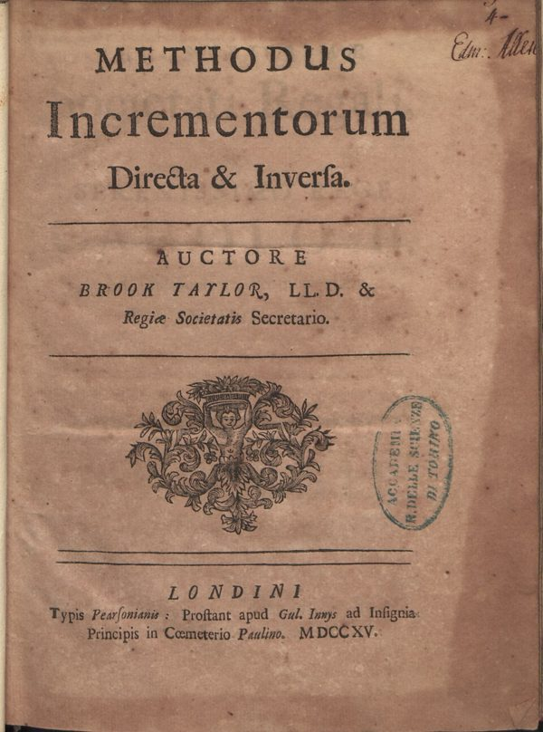
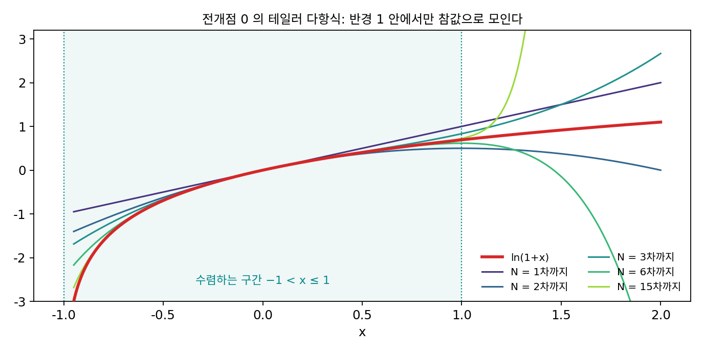
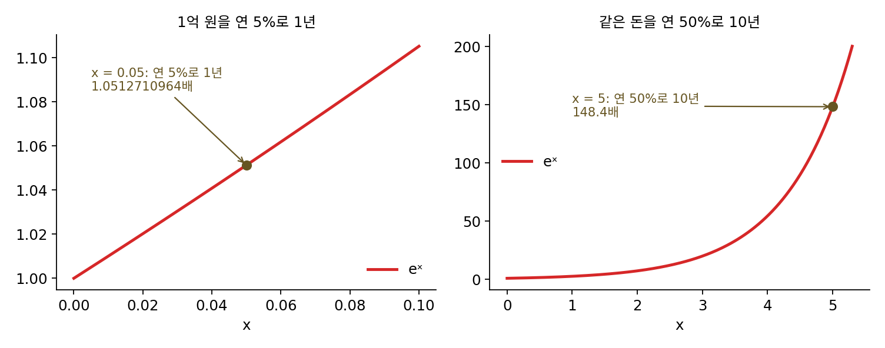
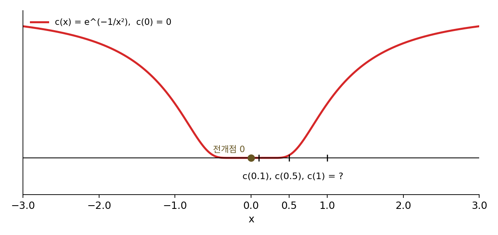
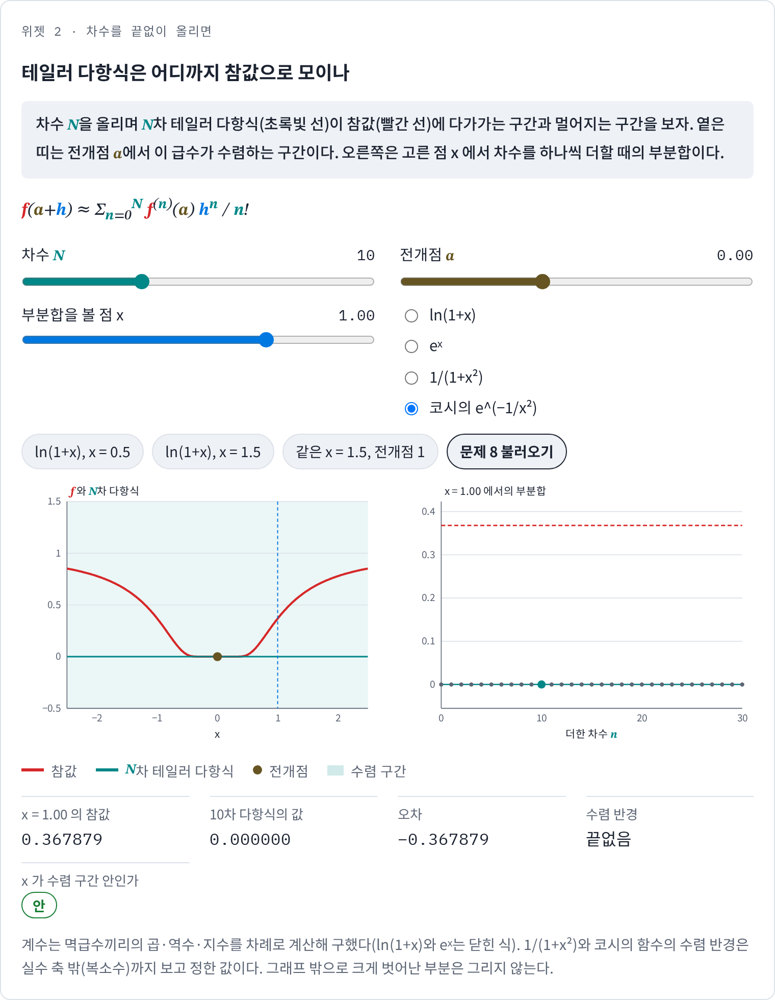
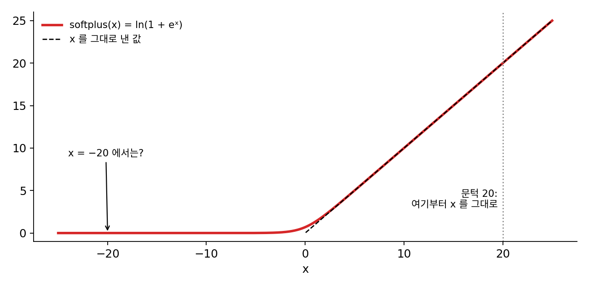

테일러 전개: 차수를 끝없이 올리면
값만 쓰면 오차가 스텝에 비례했고, 그래디언트를 넣으면 스텝의 제곱, 곡률까지 넣으면 스텝의 세제곱에 비례했다. 계단을 하나 오를 때마다 오차가 더 빨리 주니, 3차 미분, 4차 미분, 10차 미분까지 넣으면 어떨까? 한 점에서 모든 차수의 미분을 안다면 함수 전체를 되찾을 수 있을까?
역사: 커피하우스의 귀띔에서 『증분법』까지
로그표의 칸 사이를 메우던 사람들은 곧 직선보다 나은 근사를 찾았다. 이웃한 칸의 값끼리 뺀 차를 적고, 그 차끼리 다시 뺀 차를 적어 가면, 칸 사이의 값을 그 차들로 짓는 공식을 쓸 수 있다. 스코틀랜드의 제임스 그레고리(James Gregory)는 1670년 존 콜린스(John Collins)에게 보낸 편지에 이 공식을 적었고, 뉴턴은 『프린키피아』 3권 보조정리 5에 같은 공식을 실었다. 1668년에는 니콜라우스 메르카토르(Nicolaus Mercator)가 『로그 계산법(Logarithmotechnia)』에서 ln(1 + x) = x − x²/2 + x³/3 − x⁴/4 + …라는 급수를 발표했다.
영국의 브룩 테일러(Brook Taylor)는 이 흐름을 하나의 일반 규칙으로 묶었다. 그가 처음 그 규칙을 적은 것은 1712년 7월 26일 존 머친(John Machin)에게 보낸 편지인데, 그 편지에서 그는 런던의 차일드 커피하우스에서 머친이 「아이작 뉴턴 경의 급수」로 케플러 문제를 푸는 법과 「핼리 박사의 근 구하는 법」을 이야기한 것이 계기였다고 밝혔다. 왕립학회의 서기였던 그는 1715년 『증분법(Methodus Incrementorum Directa et Inversa)』을 펴냈다. 그 책의 명제 7에서 테일러는 뉴턴의 보간 공식, 곧 칸 사이를 차들로 메우는 공식에서 출발해, 칸의 너비가 사라질 만큼 작아지면 차들이 미분으로 바뀐다는 것을 써서 f(a + h)를 h의 거듭제곱으로 펼치는 공식을 얻었다. 표의 칸을 좁혀 가다 끝에 미분을 얻은 것이다.

테일러는 이 급수가 언제 수렴하는지는 따지지 않았고, 유도가 엄밀하지 않다는 것도 걱정하지 않은 것으로 보인다. 공식은 반세기 넘게 크게 주목받지 못하다가, 1772년 조제프루이 라그랑주(Joseph-Louis Lagrange)가 이 정리를 미분학의 기본 원리라고 부르면서 자리를 잡았다. 「테일러 급수」라는 이름은 1786년 시몽 륄리에(Simon L’Huilier)가 처음 쓴 것으로 보인다. 전개점이 0인 경우는 매클로린이 『유율론』에서 널리 써서 지금 매클로린 급수라 불리는데, 매클로린은 이 공식이 테일러의 것임을 밝혀 두었다.

칸을 좁히다 보니 미분이 나왔다는 게 재밌네요. 그런데 수렴하는지는 왜 안 따졌어요? 항을 많이 더해 보면 바로 보일 텐데요.

민준 학생은 항을 어떻게 더해 볼 거예요?

파이썬으로 100항까지 돌려… 아, 그때는 분수 하나하나를 손으로 계산해야 하네요.

메르카토르의 급수에 x = 2를 넣으면 항의 크기가 2, 2, 2.67, 4, 6.4로 커지니까 손으로도 이상하다는 건 보일 것 같은데요.

그런 경우는 보이죠. 어려운 건 x = 0.9처럼 항이 천천히 줄어드는 경우예요. 열 항을 더해도 참값과 0.016 차이가 나고, 스무 항을 더해도 0.003이 남아요. 무한히 더한 합을 극한으로 정의하고 수렴을 따지는 일이 자리 잡은 것은 『증분법』보다 100년쯤 뒤, 코시 때예요.

그러면 차수를 끝없이 올리면 정말 원래 함수가 되는지, 된다면 전개점에서 얼마나 먼 곳까지 되는지는 어떻게 가려요?
ln(1 + x)를 끝없이 전개하면
ln(1 + x)의 미분을 전개점 0에서 차례로 구하면 1, −1, 2, −6, 24, …이고, n차 미분은 f(n)(0) = (−1)n+1(n − 1)!이다. 이 미분값을 n!로 나눠 hn에 곱해 모두 더하면 메르카토르의 급수 h − h²/2 + h³/3 − h⁴/4 + …가 나온다. hn을 n번 미분하면 n!이 나오므로, n!로 나눠야 다항식의 n차 미분이 원래 함수의 n차 미분과 같아진다.
이렇게 한 점에서 잰 모든 차수의 미분으로 함수를 거듭제곱의 합으로 펼친 것을 테일러 전개 (미분을 모두 모아 다항식으로 펼치기 / Taylor expansion)라 한다. 앞에서 본 0차·1차·2차 근사는 이 합을 0차, 1차, 2차 항에서 끊은 것이고, N차 항까지 끊은 다항식을 N차 테일러 다항식이라 부른다.
차수를 올리면 정말 참값으로 모일까? x = 0.5와 x = 1.5에서 부분합을 구해 보자.
| 차수 N | ln 1.5 = 0.405465의 부분합 | ln 2.5 = 0.916291의 부분합 |
|---|---|---|
| 1 | 0.500000 | 1.500000 |
| 2 | 0.375000 | 0.375000 |
| 3 | 0.416667 | 1.500000 |
| 4 | 0.401042 | 0.234375 |
| 6 | 0.404687 | −0.145312 |
| 10 | 0.405435 | −2.403097 |
| 20 | 0.405465 | −96.828584 |
x = 0.5에서는 부분합이 참값 양쪽을 오가며 다가가서 20차에서 오차가 1.5 × 10⁻⁸이 된다. x = 1.5에서는 반대로, 차수를 올릴수록 부분합이 더 크게 흔들리며 참값에서 멀어진다. 20차까지 더하면 −96.8이니, 미분을 더 넣었는데 예측이 더 나빠진 것이다.
이렇게 되는 것은 함수가 가장 가까운 곳에서 깨지는 자리 때문인데, ln(1 + x)는 x = −1에서 ln 0이 되어 끝없이 작아진다. 전개점 0에서 그 자리까지의 거리가 1이고, 메르카토르의 급수는 |h| < 1에서만 수렴한다. 이 거리를 수렴 반경이라 부른다. x = 1(반경의 끝)에서는 수렴하긴 하지만 느려서, 10차에서 0.6456, 100차에서 0.6882, 1000차에서 0.6926으로 ln 2 = 0.6931에 아주 천천히 다가간다. 전개점을 1로 옮기면 깨지는 자리까지의 거리가 2가 되어, 같은 x = 1.5(h = 0.5)를 2차 다항식이 0.911897, 4차가 0.916129로 맞히고 10차에서는 오차가 1.8 × 10⁻⁸이다. 테일러 전개는 전개점 가까이에서 쓰는 도구다.

ML에서: 신경망은 왜 2차에서 멈추나
신경망 학습에서 3차 이상의 미분은 거의 쓰지 않는다. 파라미터가 d개면 1차 미분(그래디언트)은 숫자 d개, 2차 미분(헤시안)은 d²개, 3차 미분은 d³개다. 파라미터 1억 개짜리 모델이라면 3차 미분은 10²⁴개의 숫자다. 게다가 x = 1.5에서 본 것처럼, 차수를 올리는 것은 전개점 가까이에서만 이득이고 먼 곳에서는 오히려 해가 될 수 있다. 옵티마이저는 차수를 올리는 대신 스텝을 짧게 해서 낮은 차수의 근사가 맞는 거리 안에 머문다.
1차 테일러 다항식은 이론에서도 쓰인다. 폭이 아주 넓은 신경망은 학습하는 동안 파라미터가 처음 값에서 조금밖에 움직이지 않아서, 신경망의 출력이 파라미터에 대한 1차 테일러 다항식처럼 움직인다는 관찰이 있다. 이 관찰이 신경 탄젠트 커널이라는 이론의 출발점이다. 그리고 라이브러리 코드 안에서도 급수를 어디서 자를지 정하는 일이 실제로 일어나는데, 아래 문제 9에서 그 예를 본다.
문제 7. 1억 원의 연속 복리
1억 원을 연 5% 연속 복리로 1년 맡기면 1억 × e^0.05원이 된다. 이 금액을 eˣ의 테일러 전개 1 + x + x²/2 + x³/6 + x⁴/24 + …로 근사해 보자. (가) 1차 항까지, 2차 항까지 더하면 각각 얼마이고 참값 105,127,109.6원과 몇 원 차이 나는가? (나) 1원 단위까지 맞히려면 몇 차 항까지 더해야 하는가? (다) 같은 1억 원을 연 50%로 10년 맡기는 일(x = 5)에서 2차 항까지 더한 값은 참값 e⁵ = 148.4배와 얼마나 다른가?

(가)는 1차까지 1억 × 1.05 = 1억 500만 원이라 127,109.64원 모자라고, 2차까지 하면 125,000원을 더해 1억 512만 5천 원, 차이는 2,109.64원이에요. 2차면 거의 다 왔으니 (다)도 2차면 되겠죠.

(나)부터 하자. 3차 항이 2,083.33원이라 차이가 26.30원, 4차 항이 26.04원이라 차이가 0.26원이야. 4차까지면 1원 안이야. 항이 하나 늘 때마다 앞 항에 0.05/n을 곱하니까 금방 작아져.
그럼 (다)에서는 항이 하나 늘 때마다 무엇을 곱하죠?

x/n = 5/n이요. 3차까지는 오히려 항이 커지네요. 2차까지 더하면 1 + 5 + 12.5 = 18.5배라서 148.4배의 8분의 1밖에 안 돼요. 5차까지 해도 91.42배, 10차에서 146.38배, 15차에서야 148.40배예요.

eˣ는 어디서도 깨지지 않아서 수렴 반경이 끝없는데, 그래도 전개점에서 멀면 항이 많이 필요해. 수렴한다는 것과 몇 항이면 충분하다는 것은 다른 물음이네. 급수의 수렴 판정과 수렴 속도를 따로 배우던 게 이래서였어.

이자 계산기가 짧은 기간에는 단순 계산과 거의 같다가 기간이 길어지면 확 달라지는 이유가 이거였네요. 1년짜리 적금 이자를 계산할 때는 1차 근사로도 되는데, 30년 노후 자금은 1차 근사로 못 하겠어요.
문제 8. 모든 미분이 0인데 0이 아닌 함수
코시는 1823년 강의록 『미적분 강의 요약』에서 c(x) = e^(−1/x²)(x ≠ 0), c(0) = 0인 함수를 들었다. (가) c(0.1), c(0.5), c(1)을 구하라. (나) 0에서 이 함수의 모든 차수의 미분은 0인데, 그러면 전개점 0의 테일러 전개는 무엇인가? (다) 그 급수는 수렴하는가? 수렴한다면 그 합은 c(x)와 같은가? (풀어 본 뒤 위젯 2의 「문제 8 불러오기」로 확인해 보자.)

(가)는 c(0.1) = 3.7 × 10⁻⁴⁴, c(0.5) = 0.0183, c(1) = 0.3679예요. 0 근처에서 엄청나게 납작하네요. 차분으로 1차 미분을 근사해 봐도 h = 0.1에서 3.7 × 10⁻⁴³, h = 0.05에서 3.8 × 10⁻¹⁷³이니까 0이 맞아요.
(나)는 미분이 다 0이니까 테일러 전개는 0 + 0h + 0h² + … = 0이야. 그런데 높은 차수까지 정말 다 0인지는 좀 의심스러워. 미분할수록 식이 복잡해질 텐데.
차분으로 보면 1차는 0이 맞던데?
0이 아닌 곳에서 미분해 보면 늘 (x의 유리식) × e^(−1/x²) 꼴이야. 유리식은 x가 0으로 가면 커지지만, e^(−1/x²)이 어떤 거듭제곱보다도 빨리 0으로 가니까 결국 이겨. 그래서 몇 번을 미분해도 0에서는 0이겠다.
모든 항이 0이면 수렴은 확실하네요. 반경도 끝이 없고요. 그럼 테일러 전개는 성공한 거죠.
그 급수의 합을 x = 1에 넣어 볼까요?
0이요. 그런데 c(1)은 0.3679예요. 급수는 수렴하는데 엉뚱한 값으로 수렴했어요!
ln(1 + x)는 급수가 수렴하지 않아서 문제였는데, 이건 수렴하는데도 틀려. 그러면 「급수가 수렴한다」는 것만으로는 테일러 전개를 믿을 수 없는 거네.

그래요. 코시가 이 함수를 든 것도 그 말을 하려는 것이었어요. 그럼 테일러 다항식을 믿어도 되는지는 무엇으로 확인해야 할까요?

다항식과 참값의 차이를 직접 따져야 해요. 끊고 버린 항들의 합이 0으로 가는지를요. 수열이 수렴한다는 것과 그 극한이 내가 원하는 수라는 것은 따로 보여야 했던 것처럼요.

출석부에 다 「출석」이라고 적혀 있어서 모두 수업을 들은 줄 알았는데, 대리 출석이었던 거죠. 기록이 빠짐없이 맞아 보여도 실제와 같은지는 따로 확인해야 하네요.
위젯 2에서 문제 8 설정을 불러와, 차수를 올려도 테일러 다항식과 c(x)의 거리가 줄어드는지 확인해 보세요.

문제 9. softplus 는 왜 20에서 급수를 자를까
softplus(x) = ln(1 + eˣ)는 ReLU를 매끄럽게 만든 활성화 함수이고, ln(1 + eˣ) = x + ln(1 + e^(−x))로 쓸 수 있다. 파이토치의 nn.Softplus는 x가 문턱(threshold, 기본값 20)보다 크면 계산하지 않고 x를 그대로 낸다. (가) 버리는 항 ln(1 + e^(−x))를 ln(1 + u) ≈ u(u = e^(−x))라는 1차 근사로 바꾸면 x = 20에서 얼마인가? (나) float32에서 20 근처의 이웃한 두 수는 1.9 × 10⁻⁶만큼 떨어져 있다. 버린 항이 계산 결과를 바꾸는가? (다) 문턱을 얼마까지 낮춰도 float32 결과가 같은가? 반대로 x가 −20처럼 아주 작으면 softplus는 무엇으로 근사되는가?

20은 그냥 넉넉한 숫자로 정했겠죠. 정확하게 하려면 문턱 없이 늘 ln(1 + eˣ)를 계산하는 게 낫고요.
(가)는 e^(−20) = 2.06 × 10⁻⁹이야. 2차 항 u²/2는 10⁻¹⁸ 단위니까 1차 근사로 충분하고, 실제로 ln(1 + e^(−20))도 2.061 × 10⁻⁹이야.
그 2 × 10⁻⁹를 float32의 20에 더하면 어떻게 되죠?
20 근처는 1.9 × 10⁻⁶ 간격으로만 수가 있으니까, 2 × 10⁻⁹를 더해도 20 그대로예요. 돌려 봐도 float32로 20 + e^(−20)은 20.0000000이고, torch의 softplus(19), (20), (21)도 모두 x와 차이가 0이에요. 계산해 봐야 버려지는 걸 더하고 있었던 거네요.
(다)는 버린 항이 반올림 아래로 숨으면 되니까… e^(−x)가 x 근처 간격의 절반보다 작으면 돼.
정수를 하나씩 넣어 보면 그게 처음 성립하는 게 15야.
그럼 15부터는 문턱을 둬도 결과가 같고, 20은 거기서 여유를 둔 값이네. 그리고 x = −20이면 ln(1 + e^(−20))이니까 같은 1차 근사로 softplus ≈ eˣ = 2.06 × 10⁻⁹야.
그럼 float64로 계산할 때도 문턱 20이 결과를 바꾸지 않을까요?
float64에서 20 근처 간격은 3.6 × 10⁻¹⁵라서, 버린 2 × 10⁻⁹가 결과를 바꿔요. 문턱은 계산하는 수의 정밀도에 맞춰 정한 거고, float32라면 버린 항이 반올림 아래로 숨어요. 근사를 쓸지 말지는 버린 항이 결과에 보이느냐로 정하는 거네요.
실험 보고서에 측정값을 유효숫자 세 자리로 적으라면서 계산기의 열 자리를 다 쓰면 감점받던 게 생각나요. 보이지 않을 자리까지 계산하는 건 수고만 들어요.